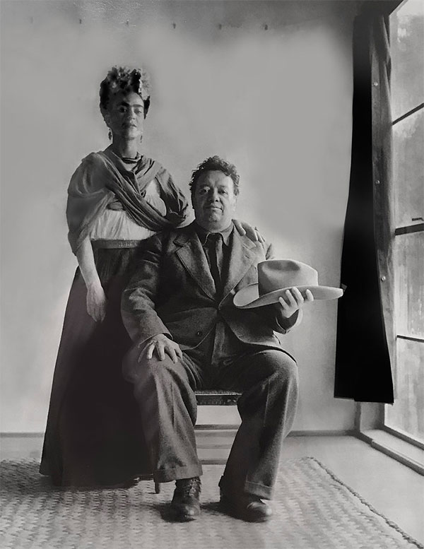
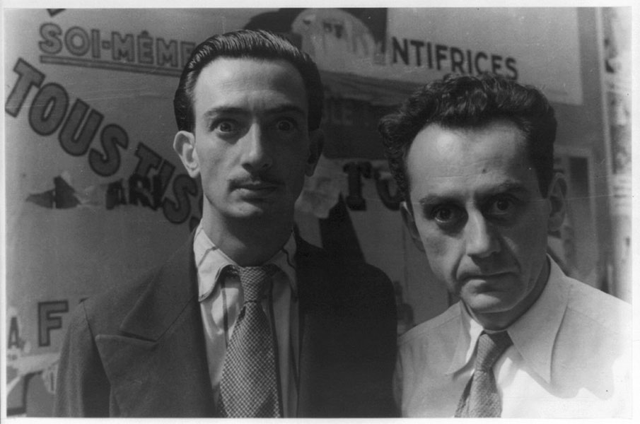
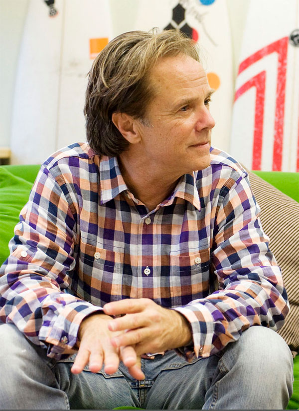
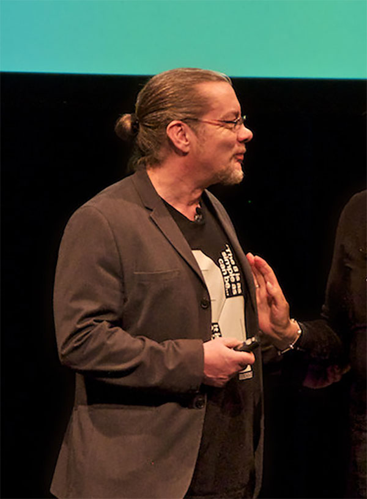
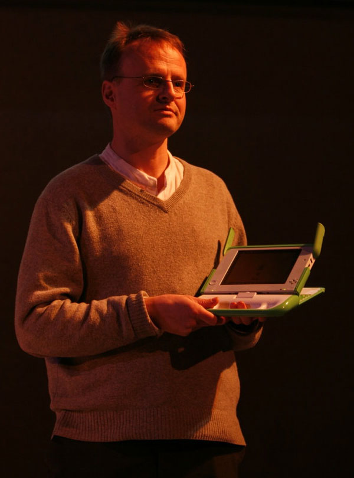
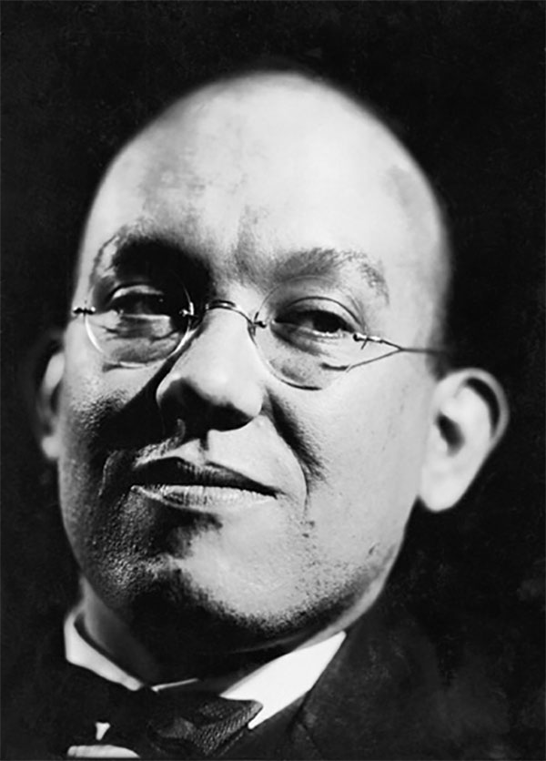

Art
Artists
Frida Kahlo
Feet, what do I need you for when I have wings to fly?
Frida Kahlo with Diego Rivera
"Nickolas Muray" by rocor is licensed under CC BY-NC 2.0.
Salvador Dalí
Each morning when I awake, I experience again a supreme pleasure - that of being Salvador Dali.
Man Ray and Salvador Dali, Paris, 1934
"Man Ray and Salvador Dali, Paris by Carl Van Vechten, 1934 (LOC)" by pingnews.com is licensed under CC PDM 1.0.
Jean-Michel Basquiat
I don't listen to what art critics say. I don't know anybody who needs a critic to find out what art is.
"Photographies de Jean-Michel Basquiat en plein travail" by y.caradec is licensed under CC BY-SA 2.0.
Design
Designers
David Carson
There's many ways you communicate. With colour, texture, sound... Even words can communicate.
Image by pennstatenews is licensed under CC BY-NC 2.0.
Neville Brody
An electrician isn't an opinion former, but a graphic designer is. My argument is that all graphic designers hold high levels of responsibility in society. We take invisible ideas and make them tangible. That's our job.
"Typo Berlin 2013 - Day Two" by Jens_T is licensed under CC BY-NC 2.0.
Susan Kare
I don't use work from the past as a literal guide; rather, those artifacts reinforce a view that simple images can communicate with wide audiences over time. Icon design is like solving a puzzle, trying to marry an image and idea that, ideally, will be easy for people to understand and remember.
"take kare of the user intrface!" by Esthr is licensed under CC BY-NC 2.0.
Engineering
Engineers
Håkon Wium Lie
In the near future, the web is going to be the master copy of human knowledge. We need to figure out ways to use that knowledge.
"Håkon Wium Lie, Opera" by Martin Bekkelund is licensed under CC BY-NC-ND 2.0.
Tim Berners-Lee
Legend has it that every new technology is first used for something related to sex or pornography. That seems to be the way of humankind.
"File:Tim Berners-Lee 2012.jpg" by cellanr is licensed under CC BY-SA 2.0.
Linus Torvalds
Microsoft isn't evil, they just make really crappy operating systems.
"File:LinuxCon Europe Linus Torvalds 05.jpg" by Krd is licensed under CC BY-SA 4.0.
Typography
Typographers
Jan Tschichold
Readers want what is important to be clearly laid out; they will not read what is too troublesome.
Photo by Eduard Wasow, 1930, public domain (wikimedia)
Matthew Carter
Throughout my life I had wandered alone, trying to find pieces of me in any place I could and when it came down to it, I was nothing but a shell of missed opportunities.

"File:Matthew Carter, 2014.jpg" by Christopher Lewis is licensed under CC BY 4.0.